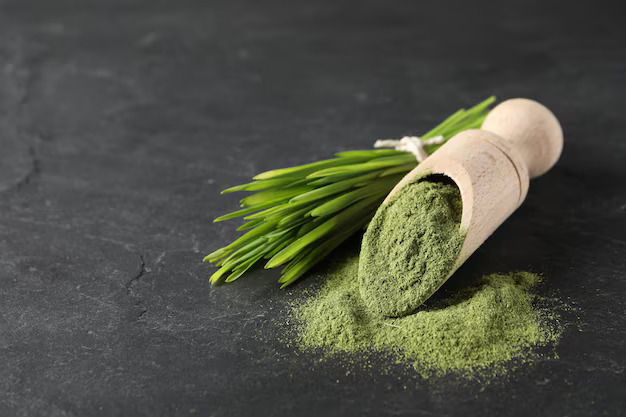

17 Essential Amino Acids (which body cannot produce)
Vitamin A, B, C, and E
Chlorophyll High Level Protien Residues
Low Calories and Has No Fat

Our Practice For Farming :
We have our own farin, Where plants are grown & freshly spouted leaves
collection.
Harvesting at proper growth time.
Cleaned properly & only to eliminate harmful bacteria & mold.
Organic certified seed for plantation.
11 days harvesting.
Organic farming with compost & no chemical base fertilizers applied.
Well water irrigation with dripping system.
No pesticide sprays on plants.
We cover & maintain hygienic practice, no adulteration on mixing with
other weed & feeds.
Draying - with solar dehydration method in close vicinity to avoid
contamination.
Pulverizing (S.S. Base) under sanitize atmosphere.
How the Easy Process Of Packaging Works
Air Seal Packaging.
No Preservatives Combined.
We know best practice for handling wheatgrass, harvesting stage,
drying stage, powder stage & also packaging.
We are strict to use food grade plastic jars & lids.
Labelling & jar packing in hygienic condition though sanitized &
sterilized standardized machine.
Capacity 5 ton per month.
Benefits
It contains nutrients and anti-oxidants. It helps to boost your immune
system, aid in digestion & results to increase energy level.
It is super food which carry detox process in body / improves immune
system / enhance metabolism & digestion.
Maintains Cholesterol & Sugar Level.
Wheatgrass is energy booster, hemoglobin booster, brain booster &
control arthritis.
It is a everyday health tonic which possess many therapeutic benefit,
anti inflammatory properties & benefits against specific diseases.
Nisargmitra Wheatgrass is for better health & wellness. This may be
counted as a latest Ingredient (Natural Source).
Anti oxidant may help to protect against certain condition such as
arthritis, heart disease, cancer & neurodegenerative disease.
It decrease oxidative stress & improves cholesterol level.
Reduce the risk of impaired bone marrow functions - Post Chemotherapy.
Decrease inflammation.
Effects
By using Nisargmitra Wheatgrass Powder, Once body gets cleaned,
unidentified health complains and trauma gets exploded or disappears
in few weeks by getting regular recommended doses & practice.
Resulting internal body energy level over all.
High level energy boosts digestion by synthesizing food & maximum
absorption of nutrients.
Cleanse intestine, reduces abdominal discomfit irritable bowel
system & other digestive complications.
This can helps to reduce food intake & keep lower sugar level.
Lowers cholesterol level, thereby reducing risk of heart attack
(Research & Studied in 2010).
Enhance immunity & helps to prevent infection & disease in body.
Keep away illness, immunity works on optimum level.
Rejuvenate & refresh the body by detox process & relives anti
anxiety.
Better Cognitive function & treat Alzheimer's disease to certain
extent.
Improves blood sugar level. Wheatgrass has compounds to insulin. It
lowers the glycolic index of food, results to positive effect on
blood sugar level.
It contains inflammatory properties & helps to ease symptoms of
arthritis. Such as stiffness, pain, swelling, less discomfort &
improves body functions.